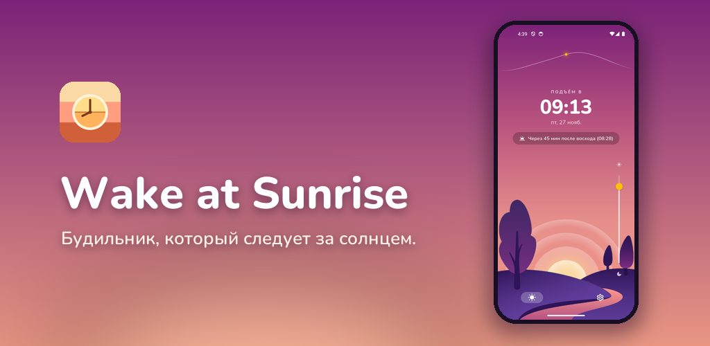
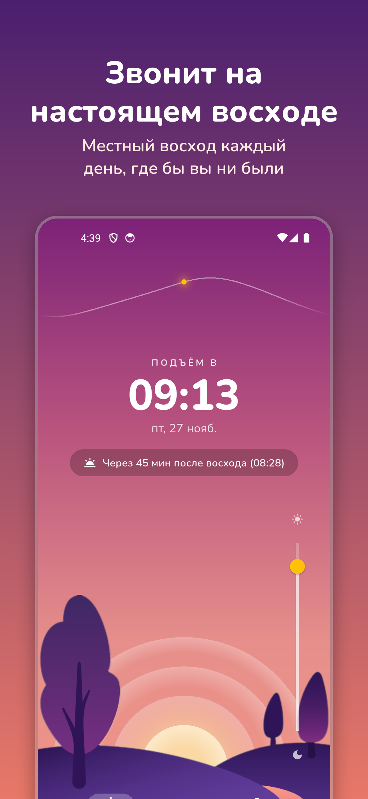
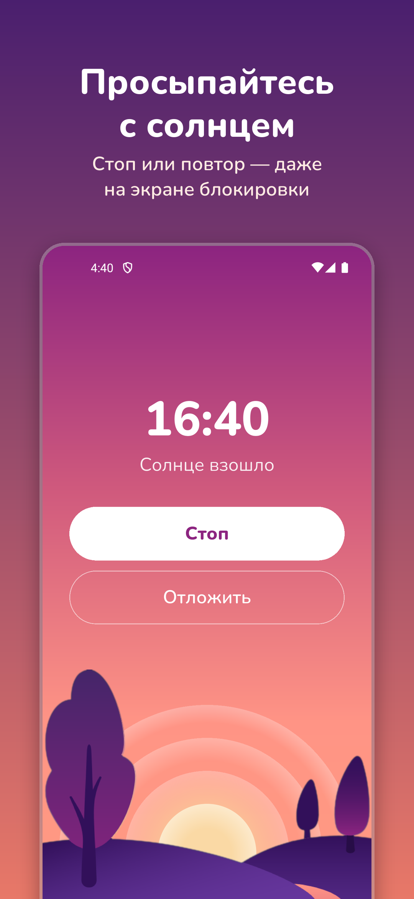
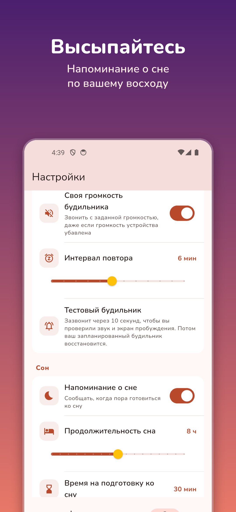

Пресс-кит
Обновлено 18 ноября 2026 г. ·
Wake at Sunrise — будильник для Android, который звонит в реальное время восхода солнца там, где вы находитесь (оно рассчитывается на самом телефоне), и смещается вместе с ним на минуту-две в день по мере смены времён года и при переезде между часовыми поясами. Пользователь выбирает, просыпаться ли на восходе или за любое число минут до или после него. Приложение бесплатное, с необязательным Premium, в который входят мягкие звуки пробуждения и напоминания о сне; в нём нет аккаунта и рекламы, а местоположение не покидает устройство. Его создал независимый разработчик.
| Название | Wake at Sunrise |
|---|---|
| Разработчик | Независимый разработчик |
| Платформа | Android 7.0 и новее · версия для iOS в разработке |
| Выпуск | 16 ноября 2026 г., в Google Play |
| Цена | Бесплатно · необязательный Premium: годовая подписка или единоразовая покупка навсегда |
| Языки | Английский, португальский (Бразилия), немецкий, шведский, норвежский, датский, финский, нидерландский, испанский, русский |
| Конфиденциальность | Без аккаунта, без рекламы, без отслеживания; восход рассчитывается на устройстве |
Доступно вGoogle Play
Скоро вApp Store
Изображения









Ссылки
Контакты
По вопросам интервью, промокодов для обзоров и любым другим пишите на адрес разработчика.